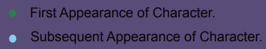
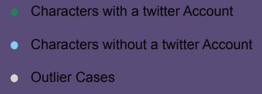

Marvel Cinematic Universe Exploration - Character Exploration
The Marvel Cinematic Universe (MCU) is one of the most profitable entertainment franchises in history.
It expands in movies, video games, comic books and TV series within a time span of 13 years.
Its stories draw inspiration from heroes and storylines deriving from the Marvel comics mythology.
This visualisation attempts to explore who are the most important heroes in the MCU through different dimensions.
Avengers, assemble!
Character First Appearances by Year
The diagram showcases the year when the hero is introduced to the MCU.
New characters have been consistently added to MCU roster throughout the years, with 2008, 2011, and 2014 having the most new heroes.
Character Appearances by Year
The diagram is highlighting the first appearances in green and the rest in blue.
Marvel appears to intentionally tweak the proportion of the first appearances of superheroes in different years, which is expected to spread out the development and evolution of Marvel's universe instead of the launch of an all-you-can-eat package.

Your Network is your Net Worth
Heroes' Interaction
The diagram is a network analysis of the MCU.
The size of the nodes is based on the number of interactions that a character has with another character.
Characters such as Captain America, Thor and Tony Stark have the biggest of nodes and are at the centre of the network.
This is natural since they appear into more than 7 movies each.
Finally, Nick Fury also has a big node since he is acting as the connective tissue of the whole universe, wholeheartedly bringing it together.
"No amount of money ever bought a second of time" or maybe it did
Total Screen Time of Characters
The lollipop chart showcases the top 10 screening time of characters in the MCU in seconds.
While the top 3 positions are held by characters that were introduced in the first years of the MCU, below we can find characters that were introduced in the last 5 years.
The conclusion we can make is that marvel seems to be investing in more characters in order to prepare a succession state for when the old actors depart from the franchise.
"No amount of money ever bought a second of time" or maybe it did
Average Screen Time of Characters in Avengers Movies
This lollipop chart showcases the top 10 screening time of characters in Avengers movies, the culmination of each MCU phases, in seconds.
The top 2 positions are occupied by Iron Man and Captain America, the leading men of MCU.
Interestingly, the subsequent positions are different from the previous chart, meaning MCU put emphasis on different heroes in each Avengers movie.
Aye, Aye, captain, surrounded by no-name heroes
Heroes' Twitter Followers Exploration
The visualisation showcases the size of the individual character twitter accounts.
Characters without a twitter account have their bubbles without pictures whereas characters with twitter accounts have their pictures in the bubbles.
Moreover, the higher the amount of followers the larger the bubble.
Based on the size of the bubbles it seems as though the character of Captain America is more popular than Tony Stark despite the fact that Tony Stark has more screening time and more appearances throughout the franchise.
The Moneymakers
Revenue and budget allocated to characters based on screen time
The clear trend between budget and revenue by screen time allocated to characters indicate the business success of Marvels superheroes -the higher importance derived from the higher budget brings back the higher revenue.
Three outliers can be identified in the faces of Nick Fury, Pepper Potts and Gamora & Star Lord.
As mentioned previously Nick Fury ends up being higher due to his nature as a singularity connecting the universe together.
Pepper Potts is also high due to the actress portraying the characters and her disputes with the company.
Finally, Gamora & Star-Lord end up being higher due to their importance in the cosmic set up of the Marvel Universe, which is also important to the mythology.

The End
By exploring Marvel Cinematic Universe movies, from Iron Man to Avengers: Endgame, we are able to identify important characters that shape the MCU.
However, Avengers: Endgame marks the end of a saga, along with the departure of beloved characters.
As MCU moves forward, existing heroes are being developed further and new heroes are being introduced - so it remains unknown who will be the most important heroes in the future.
And that what makes MCU worth the wait.